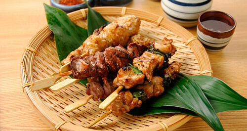
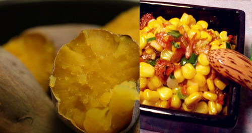
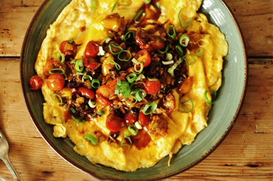
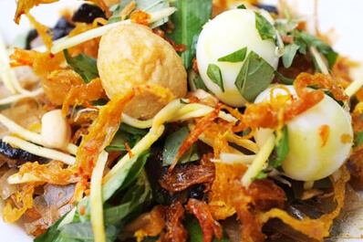
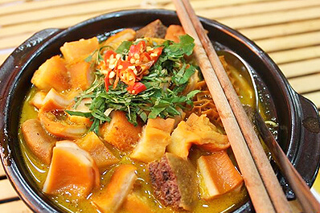
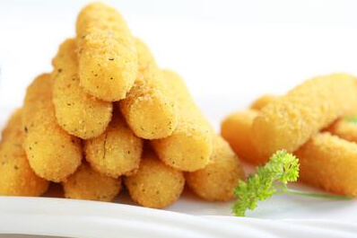
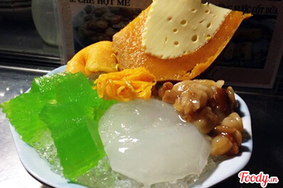
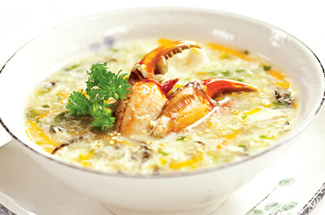

Xúc xích Đức
Nếu có dịp đi ngang khu đường Phan Xích Long, Q. Phú Nhuận (khúc gần đường Vạn Kiếp), hẳn bạn sẽ bắt gặp một anh chàng người Tây đứng bán món xúc xích Đức chính hiệu. Món ăn này ngon và dễ gây nghiện nhé.
ỐC HƯƠNG
Món này khỏi nói luôn rồi, khoái khẩu của người dân Sài Gòn là đây. Nhất là vào mùa mưa, ngồi nhâm nhi tán gẫu cùng vài đứa bạn thân bên mấy đĩa ốc thơm lừng nóng hổi thì còn gì bằng.
Món nướng

Ôi chu choa! Hễ nhắc tới đồ nướng là thấy lòng nao nức cả lên, mùi thơm đến từ cách chế biến này thật đã làm lay động bao nhiêu cái bụng thèm ăn ý nhỉ. Loại thức ăn đem nướng được thì nhiều lắm.
Bắp – Khoai lang -Trứng gà nướng

Địa điểm bán nhiều các món này nhất ấy chính là 2 nơi: khu ăn vặt công viên Gia Định và khu trường Đại Học Sư Phạm. Ngoài ra ở đây còn có món bắp xào và bò bía măm măm cũng rất thú vị. Để đảm bảo vệ sinh an toàn, bắp nướng hiện nay thường được người bán tách hạt cho vào ly nhựa rồi chan mỡ hành, ruốc và tí tương ớt vào, vừa tiện lợi cho mua về vừa đỡ dơ tay khi ăn.
Bánh trứng – Hồ lô nướng

Món này cũng mới xuất hiện tại Sài Gòn được 1 – 2 năm thôi. Hồ lô nướng thực ra là xúc xích được làm từ thịt lợn và tạo hình như viên kẹo hồ lô. Còn bánh trứng nướng lại là sự tổng hợp của trứng cút, hành lá và con ruốc. Ăn ngon ngon lạ miệng lắm nhé. Bạn có thể tìm thấy những món này tại 2 nơi: khu vực Hồ Con Rùa (chỗ ngay trước tòa soạn báo Mực Tím), Q.1 và khu ăn vặt đường Phan Xích Long, Q. Phú Nhuận.
Bánh tráng trộn

Xe bánh tráng trộn thì có vẻ rất dễ bắt gặp ở nhiều nơi tại Sài Gòn. Foody.vn chỉ xin giới thiệu một số nơi khá nổi tiếng thôi nhé: khu vực trước cổng trường Ernst Thalmann, khu công viên Gia Định và khu công viên Hoàng Văn Thụ, đường Nguyễn Thượng Hiền. Nếu bạn đang ngồi ở khu cà phê Bệt – Hàn Thuyên thì cũng có phục vụ món này luôn đấy.
Phá lấu

Món lòng bò ướp ngũ vị hương dai dai, giòn giòn thêm phần nước dùng làm từ nước cốt dừa pha chút mắm me, hết sẩy! Lá xách, bao tử, tổ ong, gan và khế là những loại được yêu thích nhất của món này.
Trà chanh chém gió – Phô mai que – Nem chua rán

Thú vui nhâm nhi trà chanh và phô mai que của giới trẻ Hà Thành đã bắt đầu lan tỏa giữa lòng Sài Gòn và đang nhận được nhiều sự ủng hộ khá tích cực. Cùng chọn cho mình một địa điểm mới để đổi khẩu vị nhé.
Chè

Chè ở Sài Gòn thì khỏi phải bàn rồi, đa dạng các thể loại từ chè thuần Việt như chè đậu xanh, chè bà ba, chè khoai môn, chuối chưng cho đến các loại chè người Hoa, chè Thái, chè Mỹ… Chúng ta thường bắt gặp những quán chè ở các khu chợ hay khu ăn vặt nổi tiếng của Sài Gòn.
Súp cua

Nếu bạn là một người sành ăn tại Sài Gòn có thể sẽ biết đến một số quán súp cua như: súp cua Hạnh hay súp cua Lê Quang Định. Một chén súp có rất nhiều thịt cua và ăn cũng khá là no nhé.